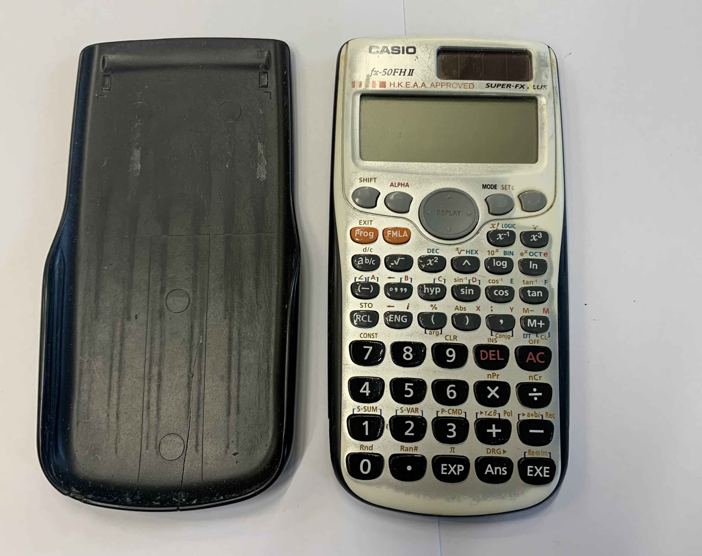
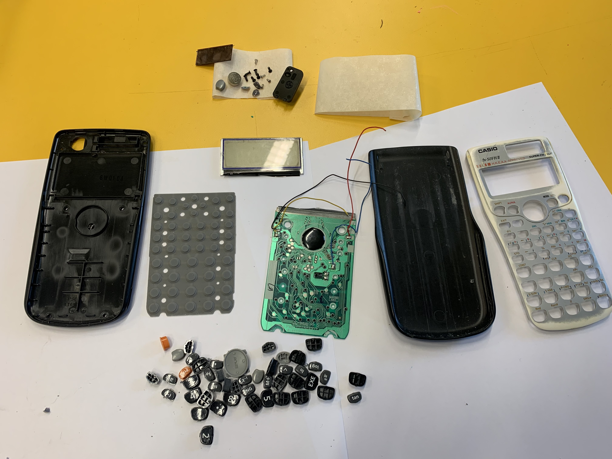
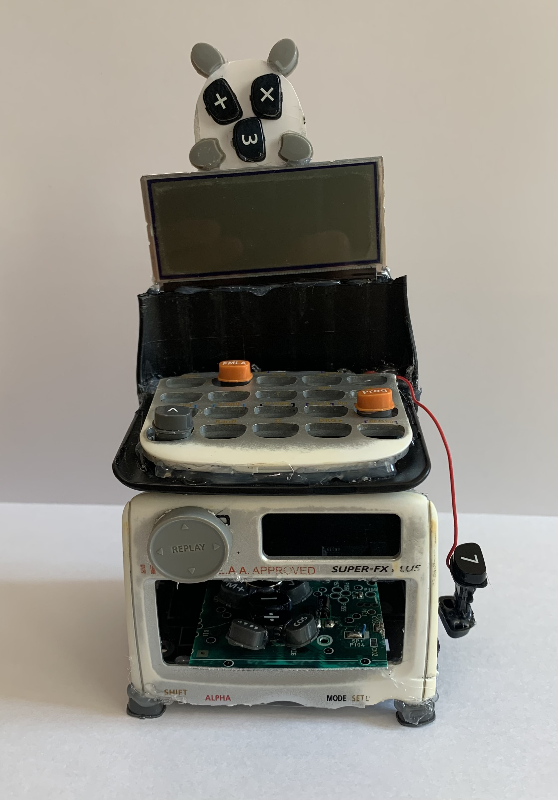
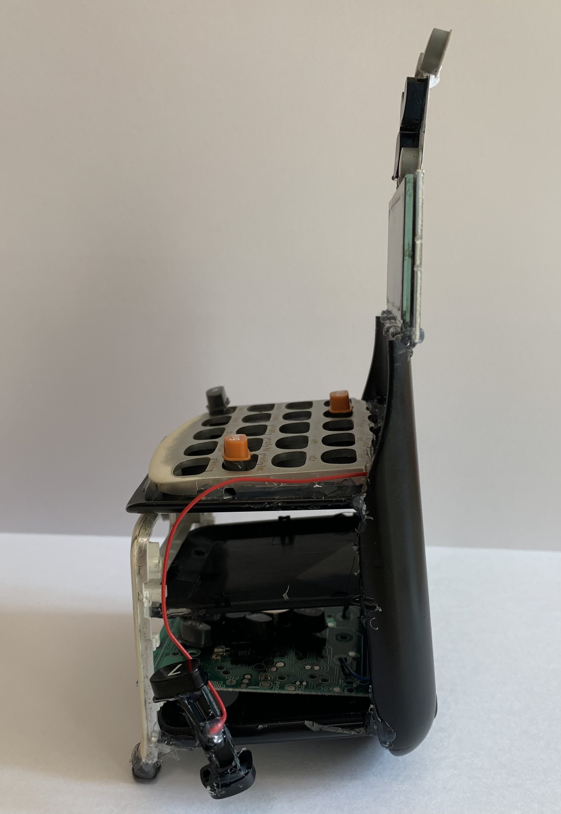

Project Overview
This university project started with a single rule: choose an everyday object, carefully deconstruct it, and rebuild it into something with a completely new purpose. I selected an old calculator and transformed it into a small Whac-A-Mole–inspired toy.
The project later expanded into a digital prototype and stop-motion animation, exploring how a reconstructed physical object could evolve into an interactive media experience.
Module & Context
Module: 2223 – Objects and Installation + Interactive Media + Sounding
Focus: Deconstruction, reconstruction, playful object design, and media translation
Object Reconstruction
The calculator was dismantled into its components—buttons, casing, circuit board and screen. By laying everything out, I began to see each piece as a material rather than a fixed object. The buttons suggested a game interface, which led to the idea of building a playful whac-a-mole character.
I rebuilt the calculator into a new structure, using the original keys as a game surface and rearranging components to create a small character “stage”.


Final reconstructed object views.


This process strengthened my confidence in hands-on making and encouraged sustainable thinking—treating old electronics as creative material rather than rubbish.
Game Prototype
After building the physical object, I extended the project into interactive media. I designed a mobile game in Adobe XD that turns the reconstructed calculator into a character inside a whac-a-mole style game.
The prototype explores screen flow, user states and playful interactions, translating the handmade object into a digital interface.
Stop-Motion Animation
Alongside the game prototype, I created a stop-motion animation featuring the physical toy. The animation combines frame-by-frame movement and sound design to bring the character to life.
Design Development
Interface layouts, flow planning, and stop-motion development materials.